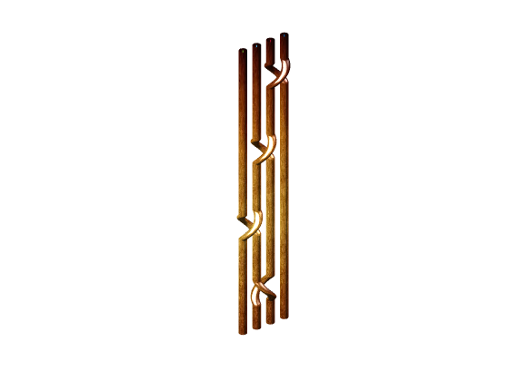

Ejemplo de uso de la clase trenza.
Contents
Constructor y representar_trenza.
%Creamos una trenza y la representamos.
trenza_a = trenza([2 -1])
trenza_a.representar_trenza
trenza_a =
trenza with properties:
indices_trenza: [2 -1]
n_cadenas: 3
get_n
Obtenemos el número de cadenas de la trenza.
trenza_a.get_n
ans =
3
get_indices
Obtenemos los índices de la trenza.
trenza_a.get_indices
ans =
2 -1
length
Obtenemos el número de cruces de la trenza.
trenza_a.length
ans =
2
inver
%Obtenemos la trenza inversa de la trenza.
trenza_a.inver
ans =
trenza with properties:
indices_trenza: [1 -2]
n_cadenas: 3
set_n
Modificamos el número de cadenas de la trenza.
set_n(trenza_a,5) trenza_a
trenza_a =
trenza with properties:
indices_trenza: [2 -1]
n_cadenas: 5
set_indices
Modificamos los índices de la trenza.
set_indices(trenza_a,[-1 2]) trenza_a
trenza_a =
trenza with properties:
indices_trenza: [-1 2]
n_cadenas: 3
perm
Obtenemos la permutación de la trenza.
trenza_a.perm
ans =
3 1 2
pura
Comprobamos si la trenza es pura.
trenza_a.pura
ans =
0
exp
Obtenemos el exponente de la trenza.
trenza_a.exp
ans =
0
matriz_burau
Obtenemos la matriz de Burau de la trenza.
trenza_a.matriz_burau
ans = [ 0, 1 - t, t] [ 1/t, -(t - 1)^2/t, t - 1] [ 0, 1, 0]
asignar_trenza
Creamos otra trenza y asignamos la nueva a la trenza anterior.
trenza_b = trenza('+s3-s1+s2+s1');
asignar_trenza(trenza_a,trenza_b);
trenza_a
trenza_b
trenza_a =
trenza with properties:
indices_trenza: [3 -1 2 1]
n_cadenas: 4
trenza_b =
trenza with properties:
indices_trenza: [3 -1 2 1]
n_cadenas: 4
equivalentes
Comprobamos si las trenzas son equivalentes.
equivalentes(trenza_a,trenza_b)
ans =
1
dehornoy
Obtenemos la reducción Dehornoy de la trenza.
warning ('off','all'); [es_trivial, reduccionDeh]=dehornoy(trenza_a,20,0.5,true); reduccionDeh
reduccionDeh =
3 2 1 -2
 es_trivial
Comprobamos si la trenza es trivial.
trenza_a.es_trivial
ans =
0
pote
Obtenemos la trenza potencia de la trenza.
pote(trenza_a,3)
ans =
trenza with properties:
indices_trenza: [3 -1 2 1 3 -1 2 1 3 -1 2 1]
n_cadenas: 4
producto
Obtenemos la trenza producto de dos trenzas.
producto(trenza_a,trenza_b)
ans =
trenza with properties:
indices_trenza: [3 -1 2 1 3 -1 2 1]
n_cadenas: 4